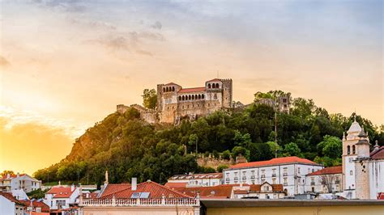
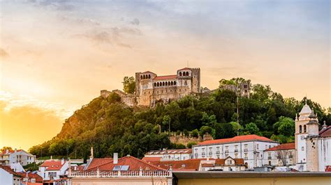

Multimédia
Nesta página encontra conteúdos multimédia
Fotografias

Leiria, cidade de história e inspiração

 

Vídeo
Poema
No alto ergue-se o castelo, guardião da memória,
Que viu reis e trovadores, no fluir da história.
D. Dinis plantou o pinhal, verde mar sem fim,
Que deu força às caravelas que partiram daqui.
O Lis corre sereno, levando consigo a canção,
Das gentes que o acompanham com orgulho e devoção.
Entre ruas e praças ecoa tradição,
Na doçura das Brisas do Lis, vive a paixão.
Leiria é música, é arte, cidade de criação,
Coração do Centro, feita de inspiração.
Entre o mar e a serra, um refúgio encantado,
Onde passado e futuro caminham lado a lado.